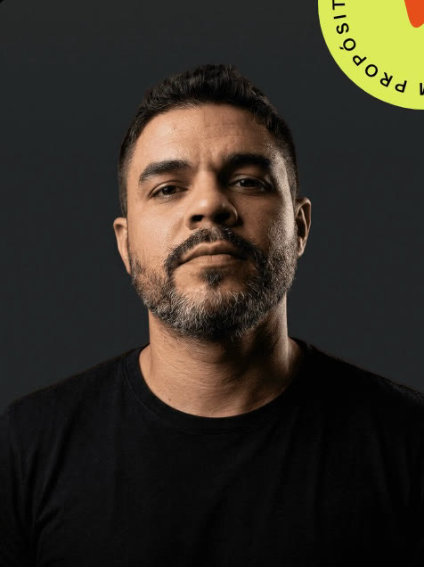

Jose JacksonProduto com propósito. UX/UI, design systems e motion.
Product Designer que desenha apps e plataformas web do problema à tela: pesquisa, fluxos, interface, protótipo e página publicada. Mais de 6 anos em motion design — o movimento entra para explicar, não para enfeitar.
Principais Projetos
Serviços
UX/UI de produtoPesquisa, arquitetura de informação, fluxos e interfaces para apps e plataformas web, com protótipo navegável.
Design systems com IATokens, componentes e documentação que mantêm o produto consistente e aceleram o time.
Web design e front-endLanding pages e sites pensados em UX, entregues desenvolvidos, responsivos e funcionando.
UX Motion & MicrointeraçõesTransições, feedback visual e microinterações que guiam o usuário e explicam o estado da interface.
Stack
Contato
Aberto a vagas de UX/UI e Product Design — CLT, PJ ou freela, presencial em Uberlândia, híbrido ou remoto.
E-mailgestaojack@hotmail.com
WhatsApp(34) 98425-9509
Conversar